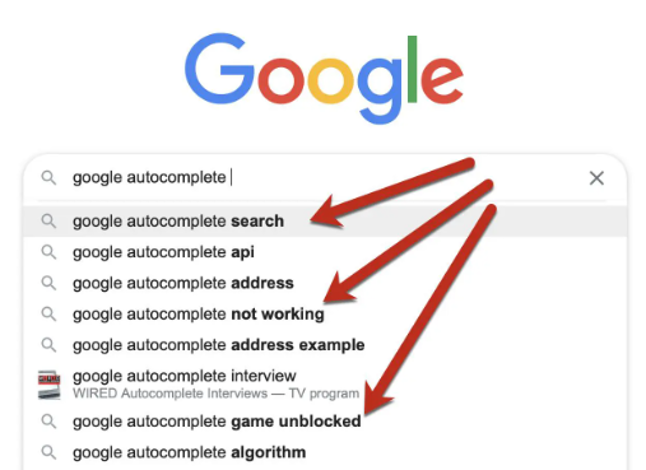

Welcome to My Portfolio!
Hello! I'm Apurv Deshpande, a Computer Engineering Master's student at Virginia Tech. This portfolio showcases my skills, experiences, and projects in software development, data engineering, and more. Feel free to explore the different sections (experience, skills, projects) and get in touch!
With a strong foundation in data collection, analysis, and exploration, I have extensive experience working on projects across various domains. I specialize in leveraging programming languages such as Python and MySQL to extract meaningful insights from data, develop machine learning models, and present findings that enable informed decision-making for individuals, businesses, and organizations. Additionally, I am proficient in cloud computing with AWS, utilizing services like EC2, S3, IAM, and RDS, particularly for deploying web-based applications.
Beyond my experience in data engineering and finance, I have a deep interest in competitive programming and software development. I am skilled in C++, Java, and Python and have experience in web technologies, including Frontend Development and PHP. My work also extends to API development using both PHP and Python. I have experience in building applications in ASP.NET and Entity Framework using languages like C#, VB.NET, and Blazor.
Other than programming and technology, I enjoy hiking, and occasionally playing football, basketball, and chess.

I am always eager to explore new technologies, tackle challenging problems, and collaborate on innovative projects.
Education
-
Virginia Tech, Blacksburg, VA 2024 – May 2026 (Expected)Master of Science in Computer Engineering GPA: 4.0
-
Savitribai Phule Pune University, India 2020 – 2024Bachelor of Engineering in Computer Engineering CGPA: 9.58/10
What I Have Done
Professional Experience
- Applications and Software Developer (Summer 2025 Internship)
VP For Finance - Virginia Tech
- Collaborated with clients to enhance a fixed‑asset tagging application and improve reporting workflows for the Home Use program using Power BI.
- Worked across VB.NET/ASP.NET and SQL Server to deliver new features, including batch uploads (Excel VBA), asset image/document handling, and editable request workflows.
- Built unified Power BI reports by integrating SQL Server and Banner data, merging complex queries to provide clear insights into capital assets used for home use.
- Graduate Assistant
Finance IT & Innovation - Virginia Tech (Dec 2024 - Present)
- In this role, I supported the solutions side of the department, which provides technical services to many units across the university.
- I contributed to the development and management of ASP.NET applications, Power Apps, Power Automate flows, website administration, Power BI reporting, Excel VBA solutions, and Blazor based accessible web forms.
- My work also involved extensive use of SQL Server, Oracle, and Algolia, along with assisting departments through application development, issue resolution and project coordination using ServiceNow and Azure DevOps.
- Quantitative Researcher
Dataism Laboratory for Quantitative Finance (DLQF) (Oct 2024 - May 2025)
- In this role, I Conducted dedicated research and worked on the technical side for the projects:
- Neural Networks for Hypothesis Testing: Designed a weighted TAR-GARCH model to assess normality of distributions and test for normal correlation structures among features.
- Intraday Momentum Trading: Collaborated with Barrett Capital Management to develop a data-driven enhancement for intraday momentum trading.
- Data Science Intern
Hamoye (Nov 2022 - Mar 2023)
- Contributed to two major data science projects, including stock portfolio performance modeling using regression and next‑word prediction using NLP, serving as Project Lead for a team of 14 interns.
- Performed end‑to‑end data science tasks such as data preprocessing, exploratory data analysis, model development, documentation, and deployment.
- Deepened expertise in machine learning, deep learning, and natural language processing through hands‑on project work and completion of five data science courses.
- Published an article as a Query Analyst and gained practical experience working with large datasets and real‑world problem‑solving in a fast‑paced internship environment.
What I Can Do
Technical Skills
Featured Projects
Project 1: Digital Flea Market App (click to view details and demo)

A full-stack web application to digitize vendor operations, booth scheduling, and product discovery at flea markets.
Tech Stack:
React, Node.js, Docker, MySQL
Project 2: Fringe Benefits App (click to view details and demo)

A full-stack C# - ASP.NET project to digitize the traditional fringe benefits management process.
Tech Stack:
C#, ASP.NET, SQL Server, Azure WebJobs, APIs
Project 3: Utilizing Machine Learning Techniques to Predict Subsequent Words in Sentences. (click to view details and demo)
Ever wondered how predictive text works? The main aim of this project is to predict the subsequent word using the n-gram language model.
Tech Stack:
Python -> Pandas, Tensorflow, NLP (NLTK), Flask
Certifications
Following certifications are verified:
- Hamoye Data Science Internship Completion Certificate
- IBM CyberSecurity Virtual Internship Completion Certificate (IBM SkillsBuild)
- Excelerate Internship Completion Certificate (Data Visualization Internship)
- Google Crowdsource Learning Community Certification
- Google IT Automation with Python Professional Certificate (Coursera)
- Google Cloud Career Readiness Certificate (Data Analyst Track)
- Google HashCode 2022 Certificate
- Google CrowdSource AI-Explore ML Certification